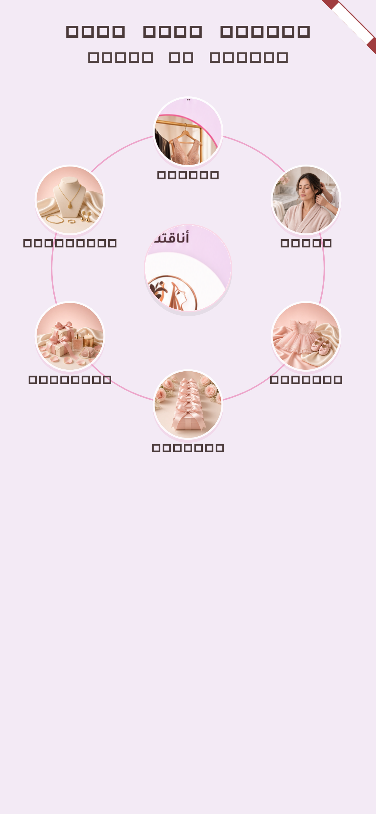

مقارنة المرجع | التنفيذ
المرجع: الرئيسية الكاملة 853×1844 — التنفيذ: golden من MiraWorldOrbitDiscover على 390×844 (Flutter widget test)
 المرجع (ليس لقطة تنفيذ)
المرجع (ليس لقطة تنفيذ)

التنفيذ 390×844 — بيئة: Flutter golden محلي
نقاط المطابقة المطلوبة:
- وسط ميرا أبيض أكبر من دائرة القسم (~1.25×)
- خط مدار وردي رفيع خلف صور الأقسام
- أناقتك = ملابس معلّقة (أصل home_orbit فقط)
- الأسماء تحت الدوائر؛ الترتيب مع عقارب الساعة من الأعلى